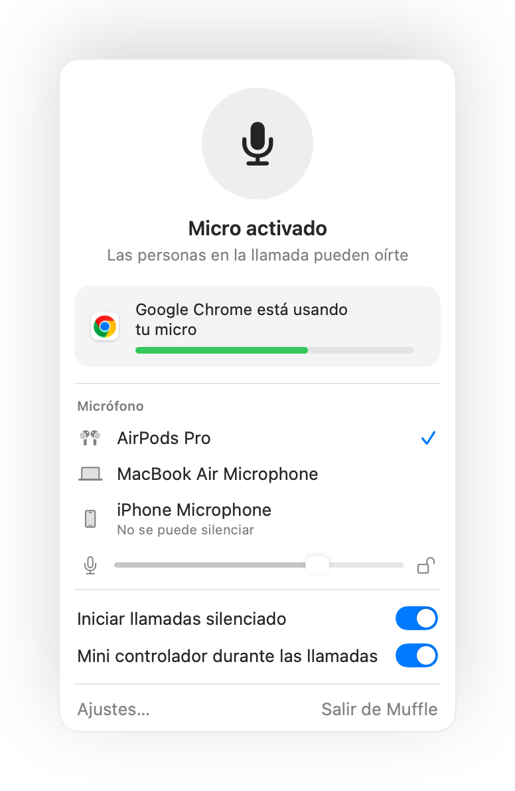

Cómo silenciar Google Meet con los AirPods en el Mac
En un iPhone, pulsar la varilla de los AirPods silencia la llamada. En el Mac, Google Meet se ejecuta en Chrome, y Chrome no traslada esa pulsación a las páginas web. Pulsas, oyes un sonido de error y Meet sigue transmitiendo tu voz.
Muffle soluciona esto en cada llamada de Meet. Recibe la pulsación de los AirPods directamente y silencia el micrófono de tu Mac, para que en Meet solo haya silencio aunque la pestaña esté en segundo plano.
Silencia Google Meet con tus AirPods
- Instala Muffle y permite el acceso al micrófono cuando te lo pida.
- Únete a tu videollamada de Google Meet en Chrome, Safari, Arc o Edge.
- Pulsa la varilla de los AirPods una vez para silenciar. El icono de Muffle se pondrá en rojo.
- Vuelve a pulsar para activar el sonido. También puedes pulsar Control-Opción-M desde cualquier app.

- Meet puede seguir mostrando que tu micro está activado, porque Muffle silencia el micrófono directamente y no el botón de Meet. Todo el mundo oirá silencio mientras el icono de Muffle esté en rojo.
- Activa «Iniciar todas las llamadas silenciado» para entrar a cada reunión de Meet con el micro apagado.
Preguntas frecuentes
¿Por qué al pulsar los AirPods no se silencia Google Meet?
Chrome no es compatible con el gesto de silenciar con los AirPods en llamadas web en macOS, por lo que el sistema no tiene ninguna app a la que enviar la pulsación. Muffle se convierte en esa app.
¿No basta con el atajo de teclado de Meet?
El atajo Comando-D de Meet solo funciona mientras la pestaña de Meet está en primer plano. El atajo y la pulsación de los AirPods de Muffle funcionan desde cualquier app.